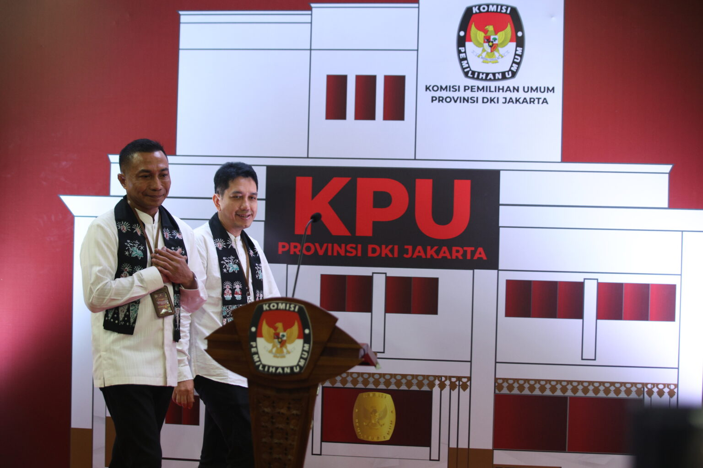

Komisioner Komisi Pemilihan Umum RI Idham Kholik (tengah) didampingi
Ketua KPU DKI Jakarta Wahyu Dinata (kiri) berkeliling melihat kesiapan
Kantor Komisi Pemilihan Umum Provinsi DKI Jakarta, Jakarta, untuk
pelaksanaan proses Pendaftaran Pilkada DKI Jakarta 2024, Selasa (27/8/2024).